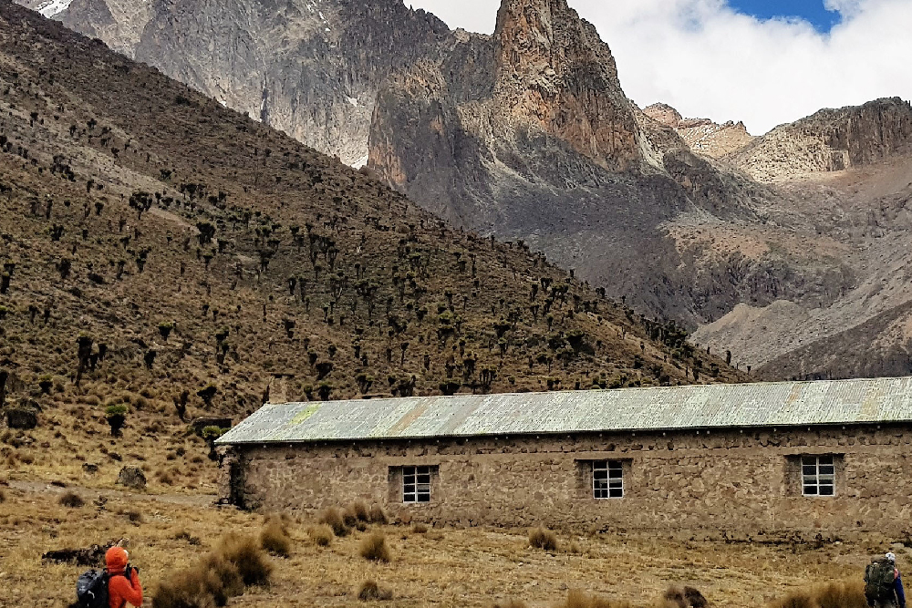
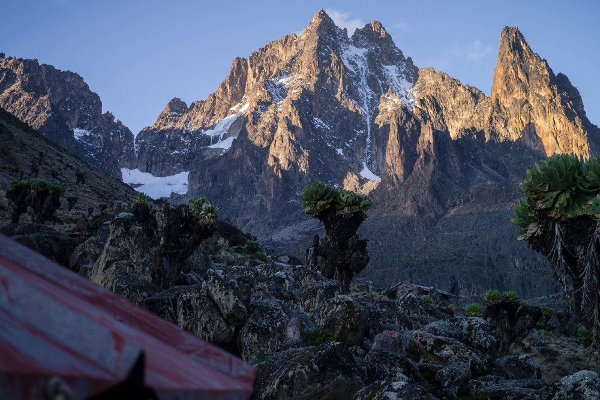
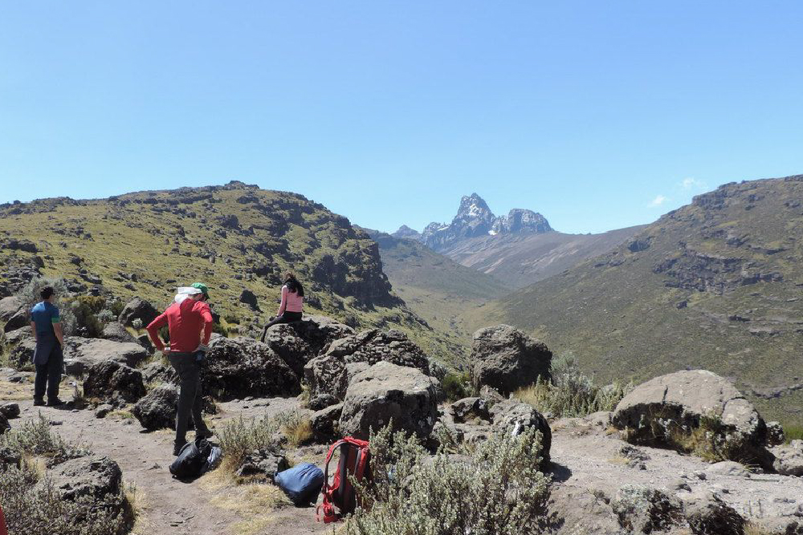
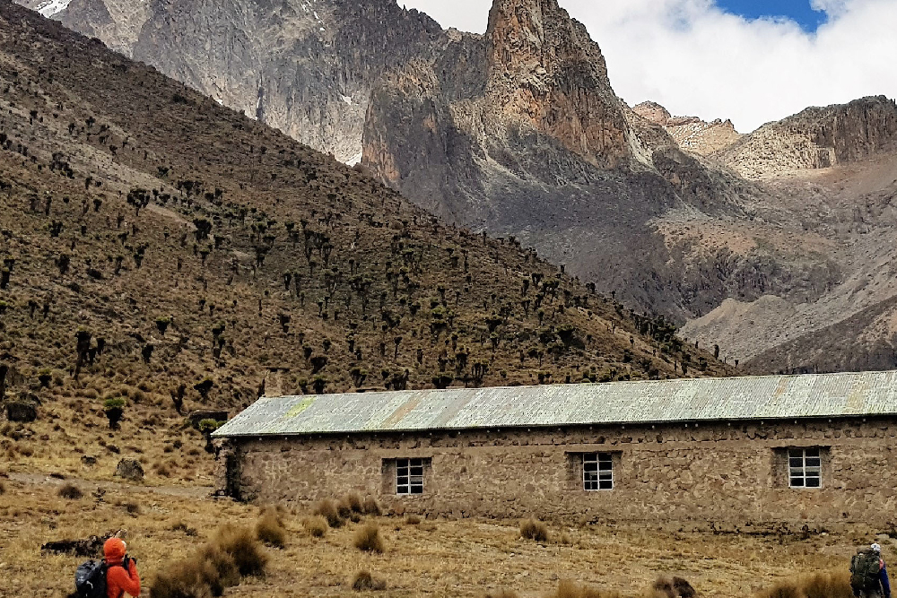
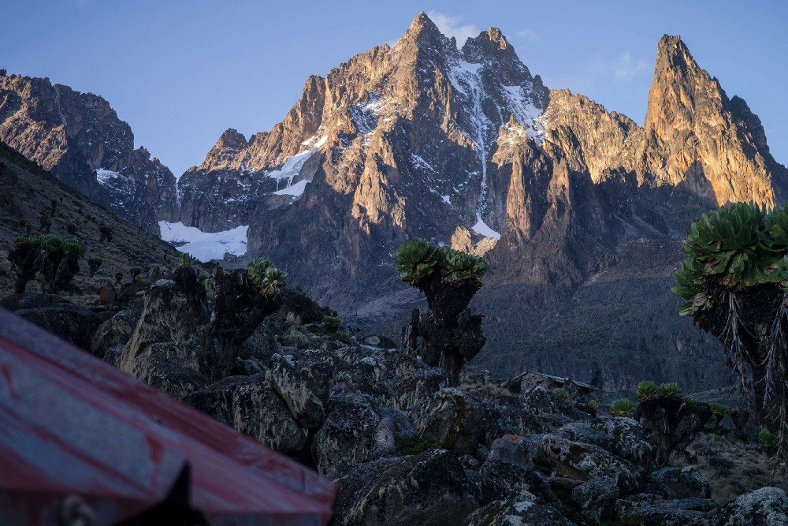
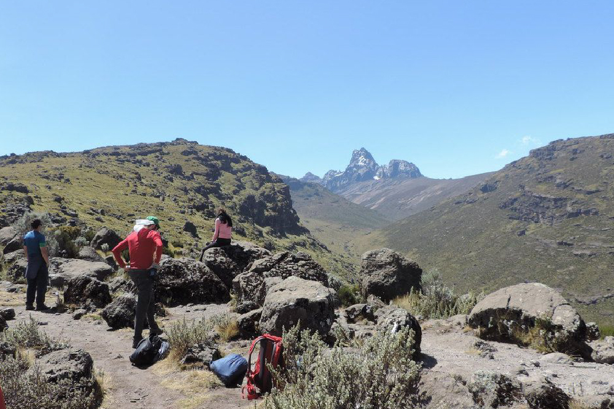

- Home
- Mountain Climbing Tours
- 6 Days Mountain Hike Tour


 





6 Days Mountain Hike Chogoria Route Down Naro Moru
Mount Kenya day trip hiking delivers trekkers with an interesting and inspiring hike culminating into one of the best and exciting views in Kenya
DETAILED ITINERARY
Day:1 Depart from Nairobi to Chogoria
Pick up from your Nairobi Hotel and drive north to Chogoria town for lunch and afternoon leisure walk in the town to acclimatize. Dinner and overnight at Chogoria Transit Motel.
Pick up from your Nairobi Hotel and drive north to Chogoria town for lunch and afternoon leisure walk in the town to acclimatize. Dinner and overnight at Chogoria Transit Motel.
Day:2 Chogoria/ Mount Meru Bandas
After breakfast, take a 4x4WD vehicle to the forest clearance, 16km from where the walk starts. You will walk for 16km through the forest along the dirt and sometimes very muddy road for 4hrs to reach Mount Meru Bandas for lunch and afternoon walks. Dinner and overnight at Mt. Meru Bandas.
After breakfast, take a 4x4WD vehicle to the forest clearance, 16km from where the walk starts. You will walk for 16km through the forest along the dirt and sometimes very muddy road for 4hrs to reach Mount Meru Bandas for lunch and afternoon walks. Dinner and overnight at Mt. Meru Bandas.
Day 3: Mount Meru Bandas - Road Head Camp
After breakfast follow the track through giant heather and forest up to Chogoria road head from where the path drops to cross a stream then follows the broad ridge to the east of the gorges valley to reach Road Head Camp taking approximately 3-4hrs. Overnight at Road Head Camp.
After breakfast follow the track through giant heather and forest up to Chogoria road head from where the path drops to cross a stream then follows the broad ridge to the east of the gorges valley to reach Road Head Camp taking approximately 3-4hrs. Overnight at Road Head Camp.
Day 4: Road Head-Mintos Hut
After breakfast follow the track through giant heather and forest up to Chogoria road head from where the path drops to cross a stream then follows the broad ridge to the east of the gorges valley to reach Mintos Hut. Dinner and overnight at Mintos Hut
After breakfast follow the track through giant heather and forest up to Chogoria road head from where the path drops to cross a stream then follows the broad ridge to the east of the gorges valley to reach Mintos Hut. Dinner and overnight at Mintos Hut
Day 5: Mintos-Point Lenana-Met Station
Leave shortly after midnight at 2am towards the main peaks and divide after an hour, above a flat green area at the head of the valley known as temple fields, arriving at point Lenana at 6:30am. After taking photographs, descend to Mackinders for breakfast and continue down to Met Stationfor dinner and overnight rest.
Leave shortly after midnight at 2am towards the main peaks and divide after an hour, above a flat green area at the head of the valley known as temple fields, arriving at point Lenana at 6:30am. After taking photographs, descend to Mackinders for breakfast and continue down to Met Stationfor dinner and overnight rest.
Day 6: Met Station/Naromoru/Nairobi
After breakfast, descend through the rainforest which is 9km to Naromoru Park Gate where you will connect with your transport back to Nairobi, arriving in the afternoon.
After breakfast, descend through the rainforest which is 9km to Naromoru Park Gate where you will connect with your transport back to Nairobi, arriving in the afternoon.